C++ primer 第9章 顺序容器
文章目录
- 一个
容器是特定类型对象的集合 顺序容器中元素的顺序与其加入容器的位置对应关联容器中元素的顺序由其关联的关键字决定，关联容器分为有序关联容器和无序关联容器- 所有容器类共享公有接口，不同容器按不同方式扩展。
- 标准库还提供了3种
容器适配器，为容器操作定义了不同的接口 - 本章9.2节的接口对所有容器适用，之后的小节只适用于顺序容器
顺序容器概述
- 所有容器都可快速访问元素，但在不同方面有折中：
- 添加/删除元素的代价
- 非顺序访问的代价
- 如表9.1是顺序容器的类型 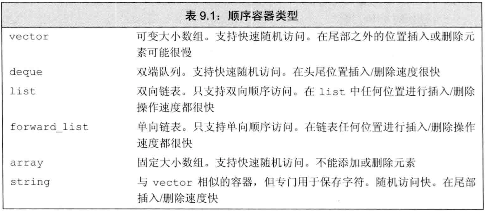
- 存储元素的策略影响容器的操作效率，甚至限制容器的某些操作
- 只有
array大小固定，其他容器都允许扩张和收缩，且高效 - 除array外，其他容器对应3种内存模型：
线性表：string和vector将元素存储在连续空间中，故通过下标的随机访问很快，在中间和头部插入/删除很慢，在尾部添加元素很快，添加元素可能造成空间的重新分配和元素拷贝。链表：list（双向链表）和forward_list（单向链表）的设计目的是让任何位置的插入/删除都快速高效且不需重新分配内存。但不支持随机访问，为访问一个元素需要遍历整个链表。由于要存储指针，故内存开销大。队列：deque（双端队列）支持快速随机访问，且在中间插入/删除元素很慢，但两端插入/删除很快。
- forward_list和array是C++11新增的类型：
- array和内置数组一样大小固定，但操作更安全
- forward_list的设计目标是达到与最快的手写单向链表相当的性能，故没有size操作（计算和保存都要开销）
- 最佳实践：C++11的容器比旧版本快很多，其性能与优化过的手写数据结构一样好。故应使用标准库容器而不是用数组造轮子
选择容器的最佳实践：- 一般用vector，除非有理由选其他容器
- 如果元素小而多，且空间开销重要，则不要用list或forward_list
- 若要求随机访问，则用vector或deque
- 若要在中间插入/删除，则用list或forward_list
- 若要在头尾插入/删除但不在中间插入/删除，则用deque
- 尽量避免在中间插入。例如可用vector存储，再用标准库算法做排序等操作来改变顺序
- 如程序分为几阶段，只有前半段必须在中间插入，则前半段用list，再拷贝到vector做后半段
- 若必须同时使用随机访问和中间插入，则看哪个占主导地位。可用实验来判断用list/forward_list还是vector/deque
- 若不确定用哪种容器，最好在程序中只用vector和list的公共操作：使用迭代器而不是下标，使用
++/--而不是下标访问
容器库概览
- 容器上的操作形成层次：
- 某些操作对
所有容器都提供 - 某些操作仅针对
顺序容器，某些操作仅针对关联容器，某些操作仅针对无序容器 - 某些操作仅适用于
特定容器
- 某些操作对
- 本节是针对所有容器都适用的操作，本章剩下几节只对顺序容器适用，11章介绍关联容器
- 每个容器都定义于一个
头文件中，文件名与容器名相同。 - 容器均定义为
模板类 - 顺序容器几乎可以保存任意类型的元素，特别是，可以容器中保存容器。容器的容器在C++11之前的版本中需要多写一个空格，如
vector<vector<string> > - 表9.2是所有容器都支持的通用操作 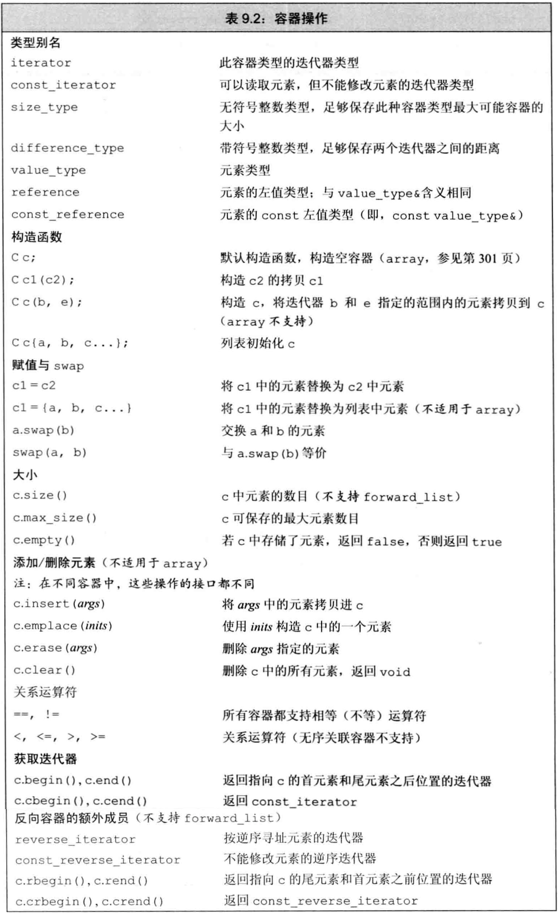
迭代器
- 表3.6列出了所有容器迭代器都支持的操作（例外：forward_list不支持
--） - 表3.7列出了
string、vector、deque、array支持的迭代器算术运算。它们不适用于其他容器 - 迭代器范围：由一对迭代器表示，两迭代器指向同一容器中的元素或尾后元素。迭代器范围包含它们之间（左闭右开）的所有元素。
- 左闭右开的好处:
- 若begin与end相等则范围为空，不等则begin指向范围中的第一个元素
- 可使begin递增直到begin==end。以此条件做循环，可保证迭代器有效
容器类型成员
- 表9.2定义了容器通用的类型成员：
- 2个
迭代器类型：iterator迭代器类型，const_iterator常量迭代器类型 - 2个
整型：size_type无符号，difference_type有符号 - 3个
类型别名：value_type元素类型，reference元素的左值（引用）类型，const_reference元素的常量引用类型
- 2个
- 大多数容器提供
反向迭代器，它可反向遍历容器。与正向迭代器相比，其各种操作含义被颠倒。例如对反向迭代器做++得到上一个元素 - 要使用这些类型成员，需要用
::指明作用域，即模板类的类名（含模板参数）
begin和end成员
begin和end成员函数得到指向容器首元素和尾后元素的迭代器，即形成包含容器中所有元素的迭代器范围- begin和end有多个版本：
rbegin返回反向迭代器，cbegin返回常量迭代器，crbegin返回常量反向迭代器 - 不以c开头的（即非常量）迭代器都是被重载过的，即返回类型都可以是const/非const。因为考虑到begin可能被const/非const成员调用。
- 以c开头的（即常量）迭代器类型是C++11定义的，用于支持auto。例如有时候想用auto得到非常量对象的常量迭代器时，用
auto it=a.cbegin();。 - 不需要写访问时，尽量都用cbegin和cend
容器定义和初始化
- 每个容器都定义了默认构造函数。除array之外的容器默认构造函数都会创建指定类型的空容器，且都可接受指定容器大小和初始值的参数
- 表9.3是容器的定义和初始化方法 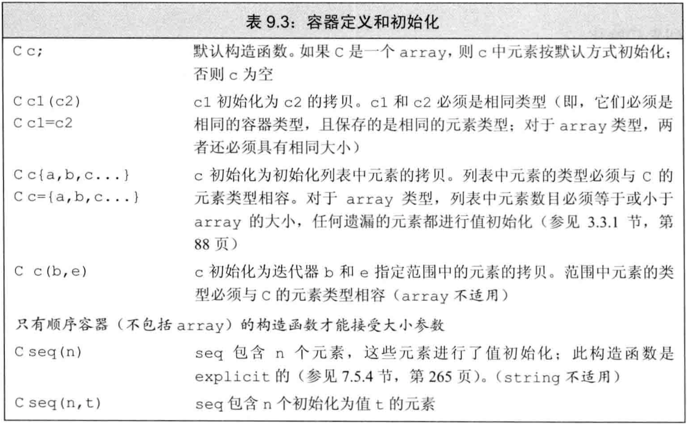
- 将一个新容器创建为另一个容器的拷贝，方法有2种：
- 直接拷贝整个容器：两容器的类型和元素类型都必须匹配
- 拷贝一对迭代器指定的范围：不要求容器类型相同，也不要求元素类型相同，只要求元素类型可转换。但不可用于array。可拷贝元素的子序列，新容器大小与迭代器范围的大小相同。
- 例子：将一个新容器创建为另一个容器的拷贝
|
|
- 可对容器做列表初始化，显式指定初始值，如
vector<string> articles={"a","an","the"};。除array外，初始化列表还隐式指定了容器的大小。 - 顺序容器（除array外）还可指定容器大小和给定初值，如
list<string> svec(10,"hi!");。如果不给初值，则进行值初始化（内置类型初始化为0，类类型调用默认构造函数）。这种对关联容器不适用。 - array的大小也是类型的一部分，定义时模板参数包含元素类型和大小
- array不可用普通的容器构造函数，因为它们都隐式确定大小。但可使用指定大小的构造函数
- 默认构造的array非空，它被填满元素，元素都被默认初始化。
- 可对array做列表初始化，列表长度须小于等于array大小，如果小于，则初始化靠前元素，剩下的被值初始化。
- 与内置数组不同的是，array允许做整个容器的拷贝和赋值，要求两array大小和元素类型都一样才行。
- 例子：array的初始化和拷贝
|
|
赋值和swap
- 表9.4的
赋值相关操作可用于所有容器。赋值运算符将左边容器中的所有元素替换为右边容器中元素的拷贝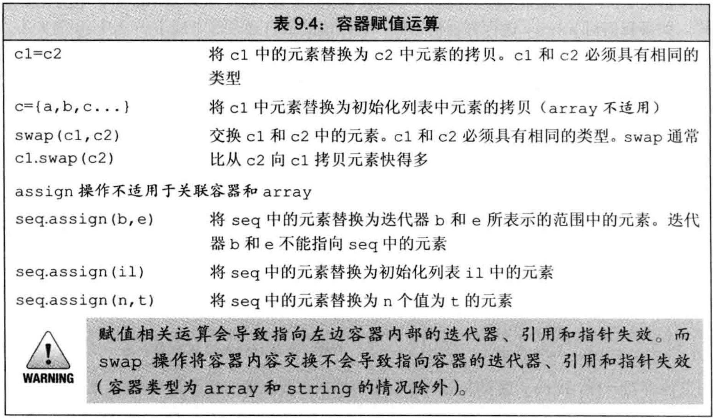 - 赋值前两容器大小可不同，赋值后大小都等于右边容器的大小
- 与内置数组不同，array允许赋值，只要两array大小和元素类型都一样
- 由于array大小固定，故只能用
=赋值，不可用assign，也不可用花括号列表赋值。 - 赋值符
=要求两侧容器类型和元素类型都相等，但assign不要求容器类型相同，只需要元素类型可转换即可 assign用参数指定的元素替换该容器的所有元素。其参数可为：- 一对迭代器范围
- 一个initializer_list（或花括号列表）
- 一个大小和初值的组合
- 由于旧元素被替换，故传递给assign的迭代器不能指向调用assign的容器
- 例子：assign不要求容器类型和元素类型相同
|
|
swap交换两个相同类型容器的内容- 除array外，swap操作都不交换元素本身，只交换数据结构。因此都是
O(1)时间 - 对array做swap会真正交换元素，故是
O(n)时间 - swap前后迭代器/指针/引用的变化：
- 除string和array外，指向元素的迭代器/指针/引用，在swap后都指向原来的元素，但已经属于不同的容器了。例如：
it指向svec1[3]，在进行swap(svec1,svec2);后，it指向svec2[3]，对it解引用得到的结果前后一致。 - 对string使用swap导致之前的迭代器/指针/引用都失效
- 对array使用swap导致之前的迭代器/指针/引用指向的元素不变，但值发生改变，即swap前后解引用得到的值不一致（因为真的交换了值）
- 除string和array外，指向元素的迭代器/指针/引用，在swap后都指向原来的元素，但已经属于不同的容器了。例如：
- C++11同时提供swap的成员版本和非成员版本，但在旧标准中只有成员版本。在泛型编程中多用非成员版本，即用
swap(a,b)而不是a.swap(b)
容器大小操作
- 3个关于大小的成员函数：
size返回容器中元素的数目empty当size为0时返回true，否则falsemax_size返回一个大于等于该类型容器所能容纳的最大元素数量的值
forward_list只支持empty和max_size，不支持size
关系运算符
- 任何容器都支持相等运算符
==和!=，除无序关联容器外都支持关系运算符<、<=、>、>= - 关系运算符两侧对象必须容器类型相同且元素类型相同，然后进行
字典顺序的比较 - 只有当元素定义了相应的比较符时，才可用其比较容器
- 容器的相等是用元素的
==实现，其他关系运算符是用元素的<实现
顺序容器操作
- 顺序容器和关联容器的不同之处在于它们组织元素的方式。
顺序容器中元素的顺序与其加入容器的位置对应，关联容器中元素的顺序由其关联的关键字决定
向顺序容器添加元素
- 除array外，所有标准库容器都可在运行时动态添加/删除元素以改变容器大小
- 表9.5是向顺序容器添加元素的操作： 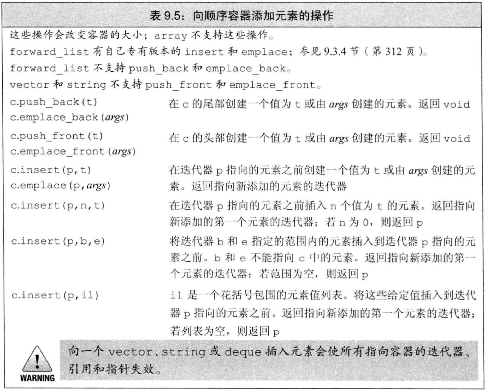
- 在vector/string尾部之外的任何位置，或deque首尾之外的任何位置添加元素，都需要移动大量元素。且向vector/string添加元素可能引起整个容器存储空间重新分配
容器元素是拷贝：用一个元素初始化容器，或把元素插入到容器中，都是拷贝。与原始对象互不影响。push_back：在尾部插入元素。除array和forward_list外，每个顺序容器都支持push_backpush_front：在头部插入元素。list、forward_list、deque容器支持push_frontinsert：在任意位置插入0个/多个元素。vector、string、deque、list都支持insert。forward_list提供了特殊的insert- vector/string虽不可用push_front，但可用insert在头部插入
- insert接受迭代器作为第一个参数，指定插入的位置，在该
迭代器之前插入。在之前是为了考虑左闭右开区间。 - insert后面的参数指定可插入的值，有4种：
- 给一个
值 - 给
个数和值，插入多个该值 - 给一对
迭代器范围，将此范围内的迭代器插入。此范围不可来自被插入容器 - 给一个
initializer_list/花括号列表
- 给一个
- C++11中，接受元素个数或迭代器范围的insert可返回指向
第一个新加入元素的迭代器。如范围为空，则不插入，返回insert的第一个参数。该设计是为了重复插入 - 例子：利用insert返回值，反复插入元素
|
|
- C++11引入新成员
emplace_front、emplace_back、emplace，分别对应push_front、push_back、insert。区别是emplace是在原地构造元素，而push/insert是拷贝元素 - push/insert可能会创建局部的临时量，再将临时量拷贝到容器
- 调用
emplace时，它将参数传递给元素类型的构造函数，使用它们在容器的内存空间中直接构造元素。故emplace的参数需对应到元素的构造函数参数
访问元素
- 表9.6是顺序容器中访问元素的操作 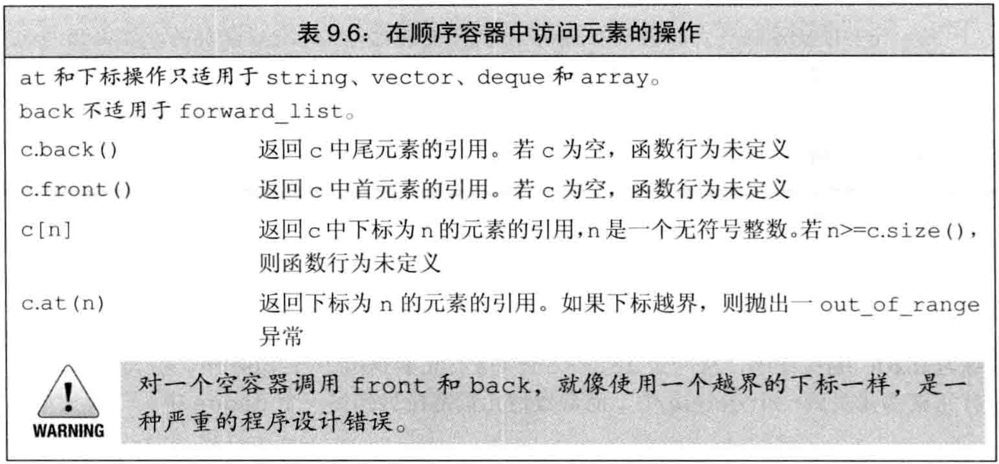
- 若访问处没有元素，则结果未定义
- 顺序容器都有
front成员函数，除forward_list之外的顺序容器都有back成员函数。前者返回首元素的引用，后者返回尾元素的引用 - front/end与begin/end的区别：
- front/back返回引用，begin/end返回迭代器
- front/back返回首元素和尾元素，begin/end返回首元素和尾后元素
- 空元素求front/back是未定义，但可求begin/end且有begin==end
- 表9.6中访问元素的成员函数（
front、back、[]、at）都返回引用。若要用auto，记得将变量声明为引用，否则存在拷贝且不能修改容器。 - 提供快速随机访问的容器（string、vector、deque、array）都支持下标运算符
[]。 - 下标运算
[]不检查下标是否在合法范围，但at成员函数在下标越界时抛出out_of_range异常
删除元素
- 表9.7是顺序容器删除元素的操作，除array外 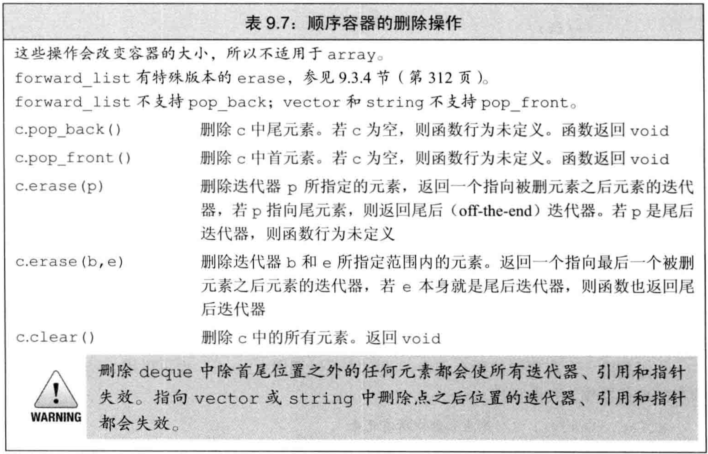
pop_front和pop_back成员函数分别删除首元素和尾元素- vector/string不支持push_front/pop_front，forward_list不支持push_front/pop_front
- pop_front/pop_back返回void，若需要值，需在pop之前保存
- 不能对空容器做删除操作
erase可从指定的任意位置删除元素，它有两个版本：- 接受一个迭代器，删除它指向的元素，返回它之后位置的迭代器
- 接受一个迭代器范围，删除左闭右开区间内的元素，返回删除列表最后元素之后位置的迭代器
- 要删除容器的所有元素，可用
clear，也可用begin/end调用erase
特殊的forward_list操作
- 表9.8是forward_list的插入/删除操作 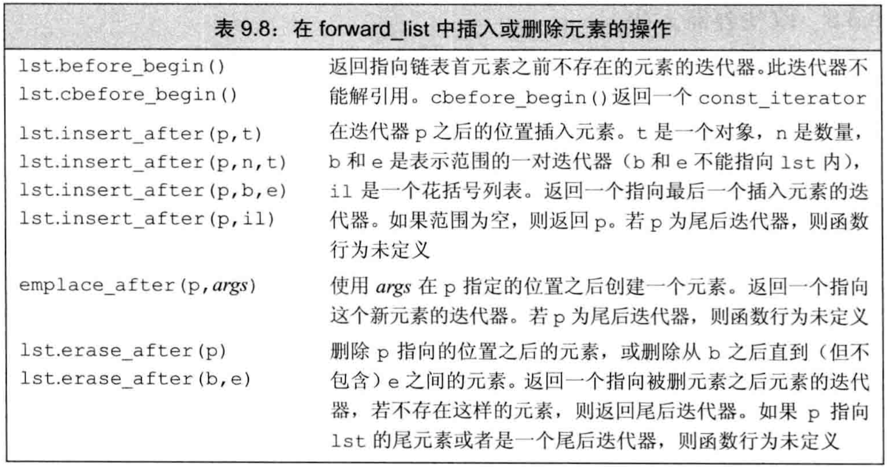
- 对forward_list（单向链表）的元素做插入/删除，需要知道其
前驱。 - forward_list的插入/删除改变的不是指定元素，而是指定元素之后的一个元素
- forward_list未定义
insert、emplace、erase，但定义了insert_after、emplace_after、erase_after来提供类似操作 - forward_list定义了
before_begin迭代器，它指向首元素之前，称为首前迭代器 - 使用forward_list时需关注两个元素：我们要处理的元素，和它的前驱
- 例子：用两个迭代器操作forward_list
|
|
改变容器大小
- 如表9.9是用
resize改变大小的操作，不支持array 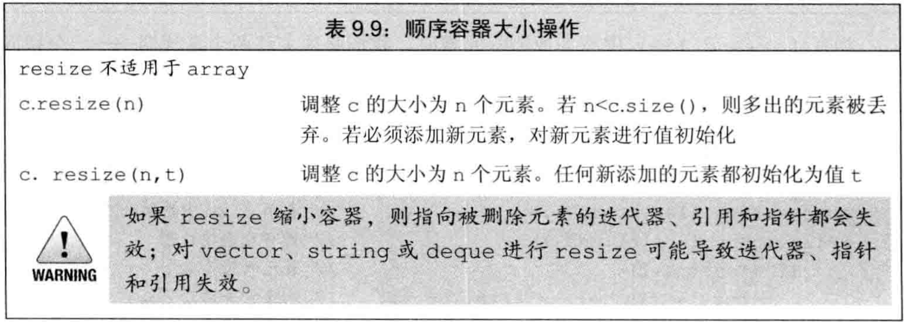 - 对于给定的目标大小，若比当前大小更小，则容器后面的元素都被删除，若比当前大小更大，则将
值初始化的新元素添加到容器尾部。可以指定值初始化的初始值
容器操作可能使迭代器失效
- 向容器中添加/删除元素可能使指向元素的指针/引用/迭代器失效
- 添加元素后：
vector/string：若空间被重新分配，则所有指针/引用/迭代器失效。若空间未重新分配，则插入位置的之后的指针/引用/迭代器都失效deque：插入首尾之外的任何位置都使所有指针/引用/迭代器失效。在首尾插入时，迭代器失效，指向元素的指针/引用不失效list/forward_list：所有指针/引用/迭代器仍有效
- 删除元素后：
- 指向被删除元素的指针/引用/迭代器一定失效
vector/string：删除位置的之后的指针/引用/迭代器都失效。特别是，删除任何元素时，尾后迭代器一定失效deque：删除首尾之外的任何位置都使所有指针/引用/迭代器失效。删除首元素无影响，删除尾元素使尾后迭代器失效list/forward_list：除被删除元素之外的所有指针/引用/迭代器仍有效
- 最佳实践：
- 最小化要求迭代器有效的程序片段
- 保证每次改变容器的操作后都更新迭代器
- 不要保存尾后迭代器，每次需要时都用end重新取
- 添加/删除vector/string/deque中的元素，必须考虑指针/引用/迭代器的失效问题。用insert/erase可由返回值直接更新
- 例子：用insert/erase实时更新迭代器
|
|
- 添加/删除vector/string的元素，deque除首尾处任何位置的插入/删除，都会使尾后迭代器失效。因此在每次插入/删除后必须重新调用end
vector对象是如何增长的
- 为支持快速随机访问，vector将元素
连续存储 - 若不使用适当的空间分配策略，则每次插入/删除操作都需要：
分配空间、拷贝元素、释放空间 - 为减少分配/释放空间的次数，vector/string要求在每次需要分配新内存空间时，会分配比所需空间更大的空间，预留作备用。之后即使会拷贝元素，但尽量不会分配/释放空间
- 表9.10提供了vector内存大小管理的操作 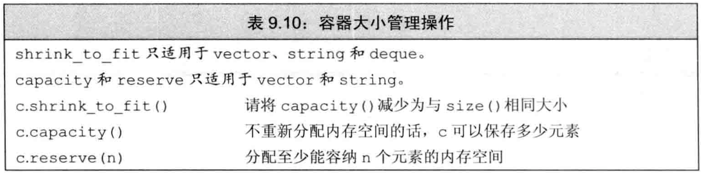
capacity操作告诉我们容器在不扩张内存时最多还能容纳多少元素reserve操作允许通知容器它至少需要容纳多少元素- reserve不改变元素的数量，即不改变
size，只影响预分配的内存 - 传给reserve的值小于等于当前capacity时，reserve什么都不做。特别是，小于时不会退回空间
- 传给reserve的值大于当前capacity时，reserve扩张容量，至少分配与要求容量一样大的空间，可能更大
- 改变容器大小的
resize方法只改变元素数量，不影响capacity shrink_to_fit是C++11的方法，它可要求vector/string/deque退回多余的空间，但具体实现可忽略此要求。即，不保证能退回。- capacity至少与size一样大，具体多大取决于实现
- 只要没有超出vector的capacity，vector就不会自动扩张（不会重新分配内存）
- vector采用的
内存扩张策略一般是：在每次需要分配新空间时，将当前容量翻倍。但具体实现可使用不同策略 - 所有扩张策略都应遵循的原则：确保用
push_back添加元素有高效率。即，在初始为空的vector上调用n次push_back，花费时间不应超过n的常数倍
额外的string操作
构造string的其他方法
- 表9.11是string特有的3个
构造函数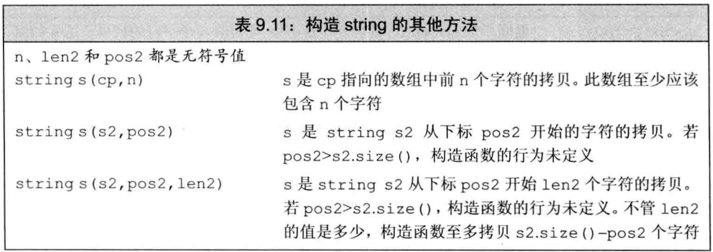 - 这些构造函数接受
string或const char *参数作为源，还接受（可选的）指定拷贝多少个字符的参数。当源为string时，还可给定下标来指定从哪里开始拷贝 - 使用
const char *构造string时，字符数组必须以空字符\0结尾，用于停止拷贝。但若给定拷贝大小的计数值，则只需不越界，不需空字符结尾。 - 使用
string构造string时，可提供开始位置和计数值。开始位置必须小于等于源string大小，否则out_of_range异常。不管要求拷贝多少，最多拷到源string结尾。 - substring操作（表9.12）返回string，其值是原始string的一部分或全部的拷贝。可传递可选的起始位置和计数值。 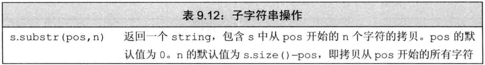
改变string的其他方法
- 表9.13定义了string特有的insert/erase/assign操作 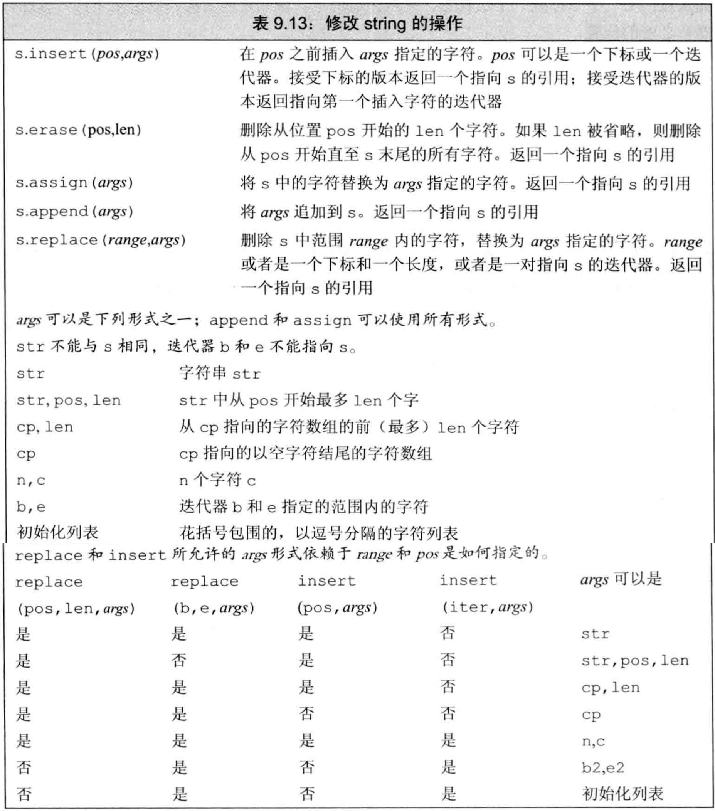
- string的
insert/erase可接受下标，用于指定insert到指定值之前的位置，或是开始删除的位置。 - string的
inset/assign可接受C风格字符串 - 可将来自其他string或子串的字符串插入到当前string或给其赋值。
- 例子：string的insert/erase/assign
|
|
- append是在string末尾插入的简写
- replace是调用erase和insert的组合
- 例子：append和replace
|
|
- append、assign、insert、replace都有多个重载版本，根据如何指定要添加的字符和string中被替换的部分
指定要被替换的部分：- assign/append无需指定替换哪部分：assign总是替换所有内容，append总将新字符追加到末尾
- replace可用两种方式指定删除范围：可以用位置和长度，也可用迭代器范围
- insert可用两种方式指定插入点：下标或迭代器
指定要添加的字符：见表9.13
string搜索操作
- 如表9.14，string提供了6个搜索函数，每个函数有4个重载版本 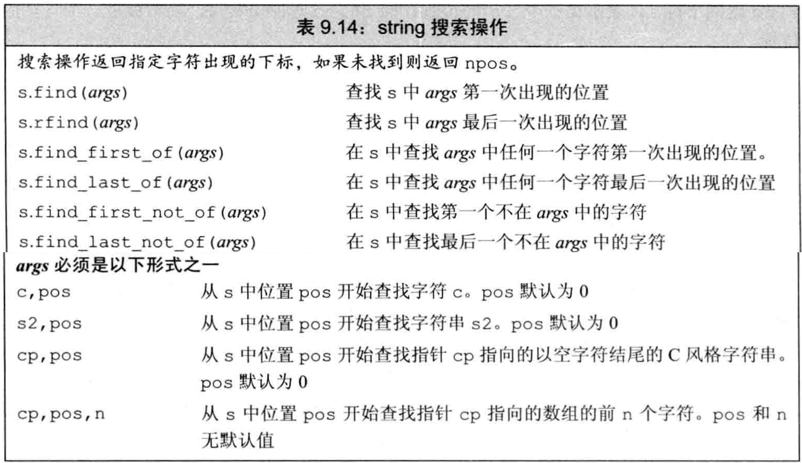
- 每个搜索操作都返回
string::size_type类型值，表示匹配位置的下标。 - 若搜索失败，即无匹配，则返回名为
string::npos的static成员，它是string::size_type类型且初始化为-1，即string最大的可能大小 string::size_type是无符号类型，不可与int等有符号混用- 搜索操作都是大小写敏感
find查找参数字符串第一次出现的位置，rfind查找参数字符串最后一次出现的位置find_first_of查找参数中任何一个字符第一次出现的位置，find_last_of查找参数中任何一个字符最后一次出现的位置find_first_not_of查找第一个不在参数中的字符，find_last_not_of查找最后一个不在参数中的字符- 可给find们指定可选的开始位置，指出从哪里开始搜索。可利用此机制
循环查找所有匹配的位置 - 例子：循环查找所有匹配
|
|
compare函数
compare函数类似C语言中的strcmp，根据源字符串等于、大于、小于给定的字符串，compare成员函数返回0、正数、负数- 表9.15是compare函数接受的参数 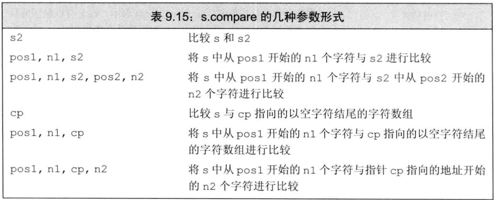
数值转换
- 表9.16规定了数值数据和string间的转换 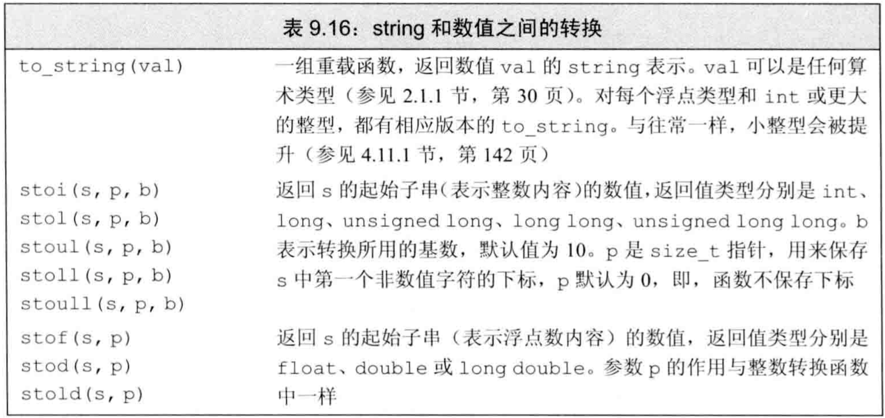
to_string将数值类型转为对应的string表示，其他各函数将string表示转为相应的数值类型- 要将string转为数值，必须保证string中的第一个非空白字符是该数值类型中可能出现的字符，例如正负号、数字等，也可是
0x或0X表示的十六进制数（此时string中可包含字母）。对于浮点类型，可以小数点.开头，并可包含e或E指定指数部分。 - 如string不能转为指定的数值类型，这些函数抛出
invalid_argument异常 - 如转换得到的数值无法用任何类型表示，则抛出
out_of_range异常
容器适配器
适配器是一种机制，能使某种事物的行为看起来像另一种事物。一个容器适配器接受一种已有的容器类型，使其看起来像另一种不同类型- 定义了3个
顺序容器适配器：stack、queue、priority_queue - 表9.17定义了所有容器适配器都支持的操作和类型 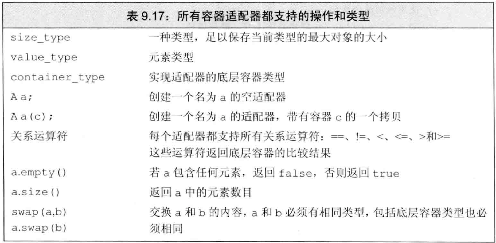
- 每个适配器都有两个构造函数：
- 默认构造函数，创建空对象
- 接受一个容器，拷贝该容器来初始化适配器
- 默认情况下，
stack和queue基于deque实现，priority_queue基于vector实现。也可在创建时在模板参数里指定一个顺序容器来重载默认容器类型 - 对适配器的容器类型有限制：
- 不能基于array，因为要添加/删除元素
- 不能基于forward_list，因为要访问尾元素
stack要求back、push_back、pop_back操作，故可构建于除array/forward_list外的所有容器queue要求back、push_back、front、push_front，故可构建于list/dequepriority_queue要求front、push_back、pop_back、随机访问，故可构建于vector/deque
- stack定义于
stack头文件中，其特有操作如表9.18 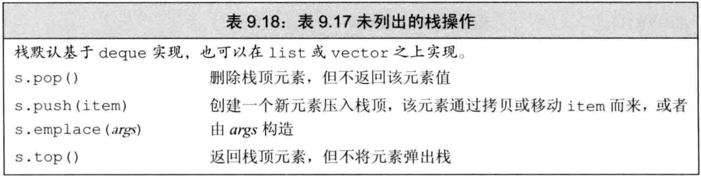 - 每个适配器都基于底层容器定义了自己的特殊操作，只可用适配器操作，不可用底层容器操作
- queue和priority_queue定义于
queue头文件中，其特有操作如表9.19 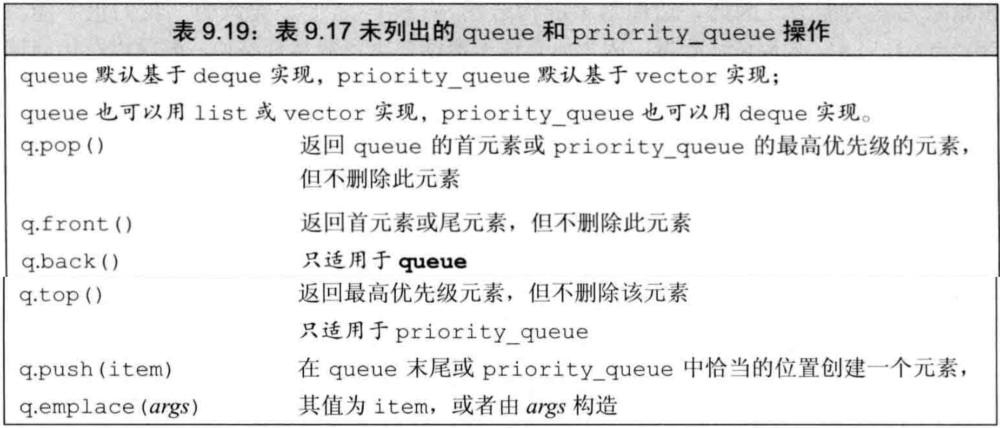 - priority_queue允许为队列中的元素建立优先级，新加入的元素会排在所有优先级比它低的已有元素之前。默认情况下使用元素类型的
<运算符来确定优先级